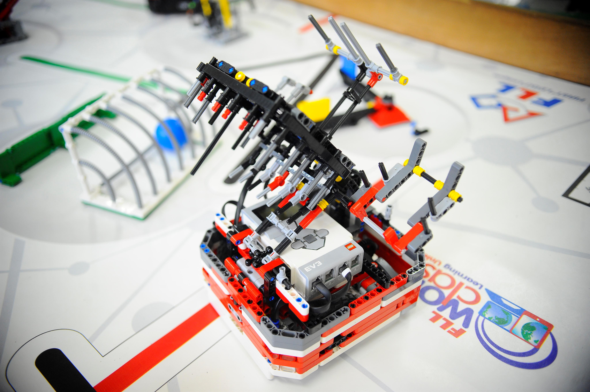

<!DOCTYPE html>
<html lang="pt-br">
<head>
    <meta charset="UTF-8">
    <meta http-equiv="X-UA-Compatible" content="IE=edge">
    <meta name="viewport" content="width=device-width, initial-scale=1.0">
    <title>Document</title>

    <link rel="stylesheet" href="Style.css">
</head>
<body>
    <script>
        console.log("ti");
    </script>
</body>
</html>
<div class="top">
    
    <h1>
        T.i.
    </h1>
    <p></p>
</div>

<h1>Torneio Robotica TLL</h1>
<p>O Torneio de Robótica FIRST LEGO League Challenge desafia estudantes de 9 a 16 anos a buscarem soluções para problemas do dia a dia da sociedade moderna. 
Os temas são diferentes a cada temporada - em 2020, por exemplo,
eles foram desafiados a repensarem espaços para exercícios, competições e brincadeiras.</p>

<p> </p>
<h1>Realidade Virtual</h1>
<p>A realidade virtual é uma tecnologia de interface avançada entre um usuário e o computador. 
 Ela cria um ambiente 3D mais próximo da realidade da pessoa com efeitos visuais, 
sonoros e táteis. As interações podem acontecer através de acessórios como: Óculos VR; Luvas; Mouse e outros dispositivos.</p>

<p> </p>
<h1> Realidade Aumentada</h1>
<p> A Realidade aumentada (RA ou AR, na sigla em inglês) é a integração de elementos virtuais em cenas do mundo real,
em geral por meio de câmeras e sensores de movimento. O recurso tem sido usada com frequência em aplicativos de redes sociais,
com os filtros do Instagram e do Snapchat, por exemplo, e jogos como o Pokémon GO.</p>

<P></P>
<h1>LEGO Mindstorms</h1>
<p> Lançada no ano de 1998, o sistema LEGO Mindstorms é uma linha específica para a área de Educação Tecnológica. Sua utilização baseia-se no aprendizado lúdico, 
cuja função didática aborda a prática de conteúdos da área de tecnologia. Os estudantes utilizam os conjuntos para desenvolver projetos de robótica.
O coração do LEGO MINDSTORMS Education é o Bloco EV3, o bloco inteligente programável que controla motores e sensores, além de proporcionar a comunicação sem fios.</p>
<P></P>

<p></p>
<h1>Open Roberta</h1>
<p> O Google lançou recentemente na Alemanha o projeto "Open Roberta", uma plataforma baseada em nuvem visando ajudar estudantes 
    e professores a programar pequenos robôs feitos partir dos kits de hardware "LEGO Mindstorms", produzidos pela companhia homônima.</p>
<P></P>
